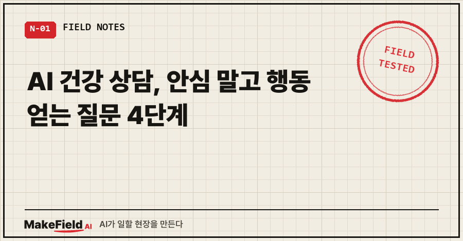
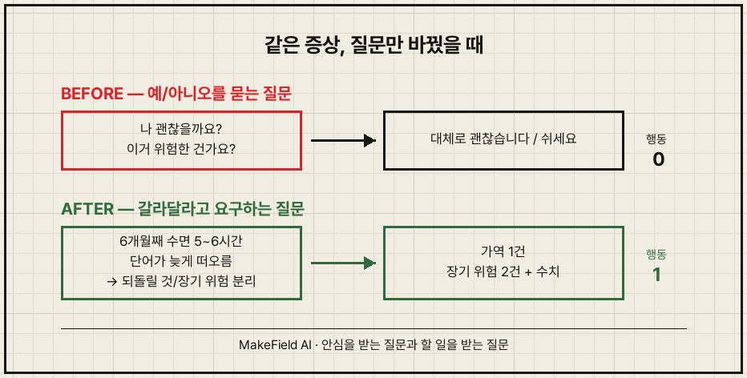
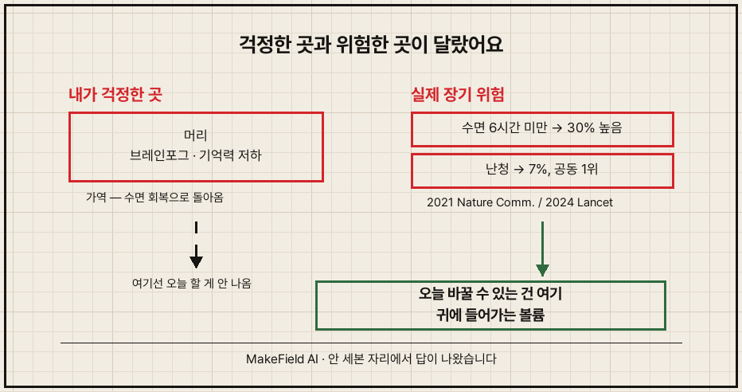
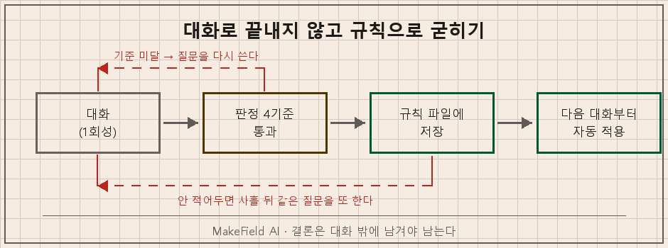

머리가 잘 안 돌아간다고 AI한테 털어놨더니, 한참 뒤에 돌아온 결론이 이어폰이었어요.
쓸 만한 답이 나온 지점만 먼저 적어둘게요.
AI 건강 상담은 "나 괜찮은 걸까?"라고 물으면 안심만 돌려줍니다. ①증상을 감정어 대신 관측치로 바꿔 적고 ②되돌릴 수 있는 것과 없는 것으로 갈라달라고 요구하고 ③항목마다 연구·수치 출처를 붙이게 하고 ④오늘 바꿀 행동 하나로 좁히는 것. 이 네 단계라야 검색 요약이 아니라 제 얘기가 나옵니다.
미리 적어두는데 저는 의사가 아니에요. 이 글은 진단 이야기가 아니라 질문 설계 이야기입니다. 2026년 8월에 제가 실제로 주고받은 순서만 적을게요.
열다섯 해를 설비 제어 쪽에서 보냈어요.
그 바닥에서 제일 많이 하는 말이 "증상 말고 원인"입니다. 알람이 울리면 알람을 끄는 게 아니라, 뭐가 울렸는지부터 가리고 들어가거든요.
그러면서 정작 제 몸 얘기엔 그 순서를 한 번도 안 써봤더라고요..
1. 처음 던진 질문으로는 안심밖에 못 받아요
봄에 셋째가 태어난 뒤로 잠이 계속 모자랐어요.
새벽에 깨고, 낮에 멍하고, 아는 단어가 입에서 안 나오고. 그게 몇 달 이어지니까 슬슬 무서워지더라고요.
그래서 처음 친 질문이 대충 이랬습니다.
요즘 머리가 잘 안 돌아가는데, 이거 위험한 건가요?돌아온 답은 이랬어요. 대체로 괜찮다, 쉬면 좋아진다, 너무 걱정하지 마시라.
틀린 말은 하나도 없는데, 그날 제가 바꿀 수 있는 게 하나도 없었습니다.
이게 왜 안 먹히냐면요.
"위험한가요"는 예/아니오를 묻는 질문이라 상대는 안전한 쪽을 고르게 돼 있어요.
계기 알람으로 치면 "이거 심각한가요?"라고 묻는 셈입니다. 돌아오는 건 "일단 지켜보시죠"뿐이고요.

2. 질문을 네 칸으로 쪼갰습니다
그래서 AI 건강 상담을 처음부터 다시 했습니다. 같은 증상을, 이번엔 네 번에 나눠서요.
| 단계 | 뭘 바꾸나 | 실제로 적은 문장 |
|---|---|---|
| ① 관측치로 | 느낌 → 숫자·기간 | "6개월째 하루 5~6시간 수면. 단어가 늦게 떠오르는 건 석 달째" |
| ② 분류 요구 | 안심 금지 | "안심시키지 말고 되돌릴 수 있는 것과 장기 위험으로 갈라줘" |
| ③ 출처 강제 | 인상 → 근거 | "항목마다 연구명·연도·기여도 수치를 붙여줘. 못 붙이는 건 빼고" |
| ④ 행동 1개 | 목록 → 오늘 | "오늘부터 바꿀 수 있는 걸 하나만. 측정 가능한 걸로" |
이 중에 힘이 제일 센 건 ③이에요.
출처를 못 대는 항목은 빼라고 하면 목록이 갑자기 짧아집니다. 남는 게 진짜니까요.
3. 걱정하던 데가 아니라, 안 세던 데가 위험했어요
갈라놓고 보니 결과가 이렇게 나왔습니다.
[되돌릴 수 있음] 브레인포그·기억력 저하 → 수면부채·피로의 가역적 증상
[장기 위험 1] 중년 만성 수면부족(6시간 미만) → 치매 위험 약 30% 높음
[장기 위험 2] 난청 → 교정 가능한 치매 위험요인 중 기여도 공동 1위(7%)
[오늘의 행동] 귀에 들어가는 볼륨 낮추기숫자 두 개는 제가 따로 원문을 찾아 맞춰봤어요.
수면 쪽은 2021년 Nature Communications에 실린 영국 성인 약 8,000명 추적 연구예요. 50세·60세·70세에 지속적으로 6시간 이하로 잔 집단의 치매 발병 위험이 정상 수면 집단보다 30% 높게 나왔습니다.
난청 쪽은 2024년 랜싯 위원회 보고서고요. 교정 가능한 치매 위험요인 14개 중에서 난청과 중년 LDL 콜레스테롤이 각각 전 세계 치매의 7%로 공동 1위였어요.
여기서 제가 좀 조용해졌던 게 뭐냐면요.
저는 몇 달째 "머리"를 걱정하고 있었는데, 오늘 당장 손댈 수 있는 지점은 귀였습니다.
걱정은 한 번도 그쪽을 본 적이 없었고요..

이어폰 얘기가 왜 나왔냐면, 제가 야외에서 오픈형을 쓰거든요.
길에서 차 지나가면 안 들리니까 볼륨을 올려요. 지하철에서 또 올리고요.
문제는 이어폰이 아니라 그 올린 볼륨이었습니다.
기준도 같이 확인했어요.
세계보건기구 안전청취 기준으로는 80dB이면 일주일 누적 40시간이 한도고, 85dB을 넘는 지속 노출은 피하라고 돼 있어요. 널리 쓰이는 요령으로는 "최대 볼륨의 60%, 한 번에 60분"이 있고요.
그런데 정작 제 노출이 몇 dB인지는 추측할 필요가 없더라고요. 아이폰이면 건강 앱 안에 '헤드폰 음량'이 이미 기록돼 있습니다. 계측기가 몇 년째 주머니에 있었던 거죠..
여러분은 지금 쓰는 이어폰 볼륨이 몇 dB인지 아세요? 저는 이 질문을 받고서야 처음 열어봤어요.
그래서 바꾼 건 두 가지예요.
시끄러운 데서는 볼륨을 올리는 대신 소음을 줄이는 쪽으로 갈 것. 그래서 노이즈캔슬링 되는 물건으로 하나 바꾸기로 했고요.
야외 운동용 오픈형은 그대로 두되, 볼륨을 올리고 싶으면 그건 조용한 데로 옮기라는 신호로 읽기로 했습니다.
4. 이 상담이 제대로 된 건지 판정하는 기준
말로만 끝나면 사흘 뒤에 똑같은 질문을 또 하게 되더라고요. 그래서 AI 건강 상담이 끝났다고 볼 통과 기준을 네 줄로 정해뒀어요.
| 확인할 것 | 통과 기준 |
|---|---|
| 답에 숫자가 있나 | 기간·비율·기준치 중 최소 하나 |
| 출처를 물었을 때 | 연구명 또는 기관명 + 연도가 나옴. 못 대면 그 줄은 버림 |
| 오늘 할 게 있나 | 오늘 안에 시작 가능하고, 측정 가능할 것 |
| 안심 문구만 남았나 | "걱정 마세요"만 남았으면 ①로 되돌아감 |
그리고 하나 더. 결론을 대화 안에만 두지 않는 거예요.
저는 이 상담 결과를 AI 비서가 매번 읽는 규칙 파일에 박아뒀습니다. 이달 말까지는 새 일감 제안을 하지 말라고요. 그 파일 원문이 이렇게 생겼어요.
회복 기간: 2026-08-13 ~ 2026-08-31
- 이 기간의 쉼은 회피 신호가 아님
- 유일한 권장 행동: 수면 우선, 가벼운 운동 복귀(주 2회, 요일 고정)
- 9월 1일 이후: 상태 확인 후 재개 여부를 함께 결정. 자동 재개 아님안 적어두면 다음 대화에서 AI는 다시 "이번 주엔 뭘 출하할까요"부터 묻거든요.
사람 기억도 마찬가지고요.

이건 저도 헷갈렸던 것들이에요
Q. 그냥 병원 가면 되는 거 아닌가요?
맞아요. 이 순서는 병원을 대신하는 게 아니라 병원 가기 전에 뭘 말할지 정리하는 용도예요. "6개월째 5~6시간"처럼 기간과 숫자로 적어두니 진료실에서 할 말이 정리되더라고요. 판단은 사람 몫입니다.
Q. AI가 출처를 지어내면요?
그래서 ③에서 "못 붙이는 항목은 빼라"고 못 박습니다. 그러고도 남은 것 중 중요한 한두 개는 제가 직접 검색해서 논문 제목이랑 연도를 맞춰봐요. 이 글에 적은 두 연구도 그렇게 원문을 확인한 것만 남긴 겁니다. 확인 안 된 건 아예 안 씁니다.
Q. 건강 말고 다른 데도 쓸 수 있나요?
됩니다. 뼈대가 "감정 → 관측치 → 가역/비가역 분류 → 출처 → 행동 하나"라서요. 장비를 살까 말까, 이 일을 계속할까 말까 같은 데도 그대로 얹어 씁니다.
정리하면, 그날 제가 바꾼 건 정보가 아니라 질문이었어요.
"나 괜찮아?"는 안심을 받는 질문이고, "되돌릴 수 있는 것과 없는 것을 갈라줘"는 오늘 할 일을 받는 질문이더라고요.
그리고 답은 몇 달째 걱정하던 데가 아니라, 한 번도 안 세본 데서 나왔습니다.
다음 편에는 이 회복 기간에 하기로 한 주 2회 운동을 결심 대신 구조로 어떻게 붙들어 맸는지 적어볼게요!
makefield.ai에는 이렇게 질문을 뜯어고친 기록만 따로 모아둔 칸이 있습니다.
태그: #AI건강상담 #AI에게증상물어보기 #AI질문하는법 #수면부족브레인포그 #이어폰볼륨청력 #난청치매위험 #중년수면부족 #헤드폰음량 #AI팩트체크 #AI출처확인 #챗GPT활용법 #AI생활활용 #AI로일하기 #현장엔지니어 #MakeFieldAI